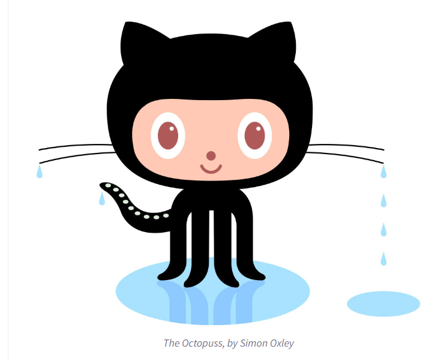

Q. What is a version control system?
Version control, also known as source control, is the practice of tracking and managing changes to software code. Version control systems are software tools that help software teams manage changes to source code over time.
Q. What is Git?
- By far, the most widely used modern version control system in the world today is Git. Git is a mature, actively maintained open source project originally developed in 2005 by Linus Torvalds, the famous creator of the Linux operating system kernel.
Q. What is Github?
- GitHub is where over 100 million developers shape the future of software, together. Contribute to the open source community, manage your Git repositories. It's used for storing, tracking, and collaborating on software projects. It makes it easy for developers to share code files and collaborate with fellow developers on open-source projects.
Q. Who started Github and how was it started?
The GitHub service was developed by Chris Wanstrath, P. J. Hyett, Tom Preston-Werner, and Scott Chacon using Ruby on Rails, and started in February 2008. Git was largely unknown as a version control system.There were no commercial Git hosting options whatsoever. And so GitHub was created to provide developers the option to host code securely and manage commits to code in proper manner.
Q. What company owns it now?
Microsoft Corp
Q. How much does a Github account cost?
GitHub offers free and paid plans for storing and collaborating on code. $49 for active commiter.
The GitHub logo is an octocat, which is a cat-like creature with eight tentacles.

^Octocat image by Cameron McEfee, The Octocat— a nerdy household name
Terms definition
|
Git/Github terms |
Definition |
| repository |
a central storage location for managing and tracking changes in files and directories. |
| commit |
to save your changes to the local repository. |
| fork |
a copy of an existing repository in which the new owner disconnects the codebase from previous committers. |
| push |
to upload local repository content to a remote repository. |
| pull request |
often abbreviated as PR, serves as a proposal to merge changes made in one branch of a repository into another, typically from a feature branch into the main branch. |
| workflow |
a configurable automated process that will run one or more jobs. |
| issue |
items you can create in a repository to plan, discuss and track work. |
| raw button |
like the name suggests, opens the file in a raw form, meaning that any HTML formatting disappears. |
| blame button |
it is used to examine the contents of a file line by line and see when each line was last modified and who the author of the modifications was. |
|